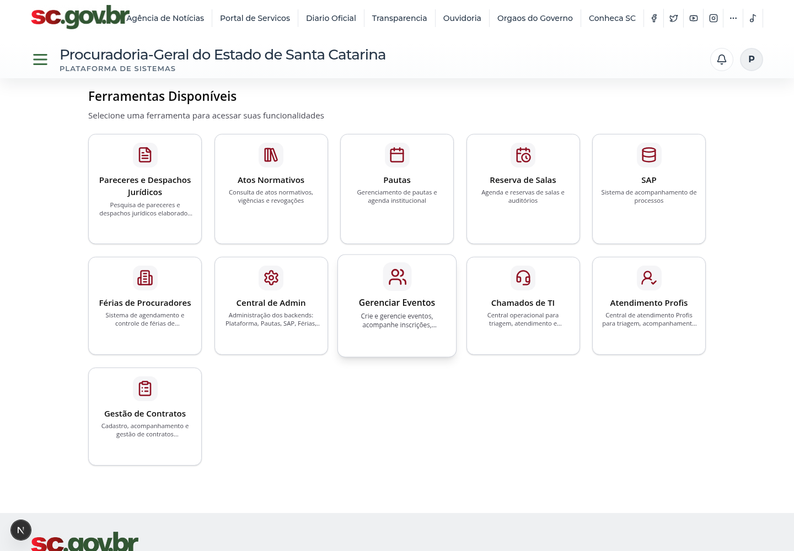
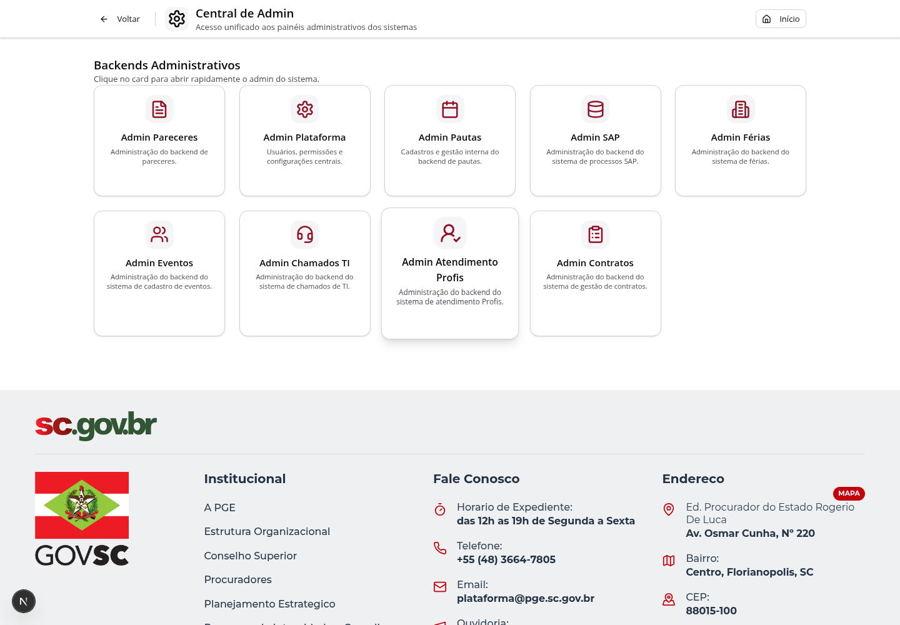
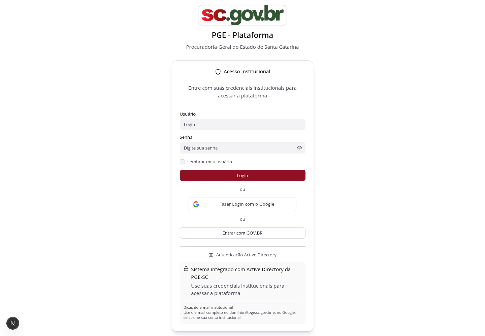
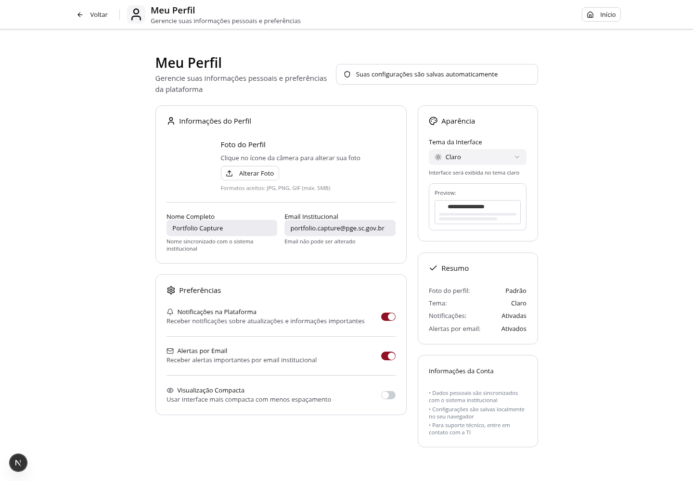
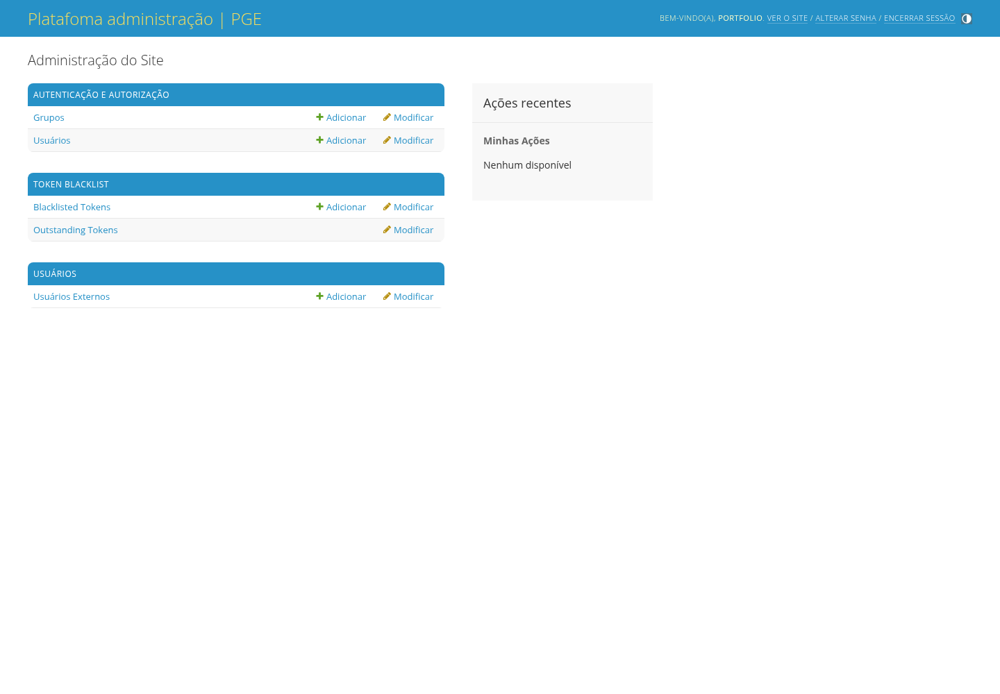

01 / Plataforma institucional
Plataforma PGE
Hub institucional que centraliza sistemas internos da PGE-SC, autenticação, permissões, favoritos, notificações e atalhos para módulos administrativos e jurídicos. O módulo funciona como porta de entrada para ferramentas como Pareceres, Atos Normativos, Pautas, SAP, Reserva de Salas, Eventos, Chamados, Atendimento Profis e Contratos.

O que entrega
- Login institucional com credenciais locais, Google e Gov.br
- Dashboard unificado para entrada nos sistemas corporativos
- Central de Admin para acessar backends administrativos
- Perfil do usuário, sessão, permissões e navegação protegida
- Integração com módulos externos por URLs de ambiente
Frontend
Backend e dados
Infra e integrações
Serviços frontend, backend e db, com Next.js em 3000, Django em 8000 e PostgreSQL em 5432.
JWT, cookies httpOnly, usuário autenticado, grupos administrativos e bloqueio de ferramentas sem permissão.
Centraliza URLs de sistemas satélites e mantém a experiência de entrada única para módulos internos.
Galeria do módulo
Telas capturadas do ambiente Docker de desenvolvimento.



